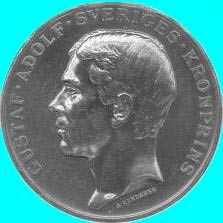
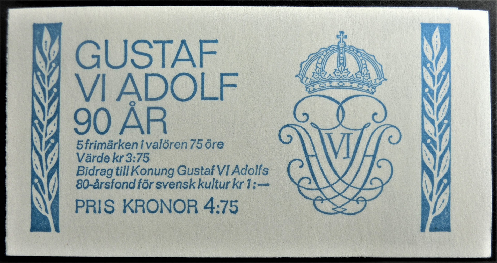
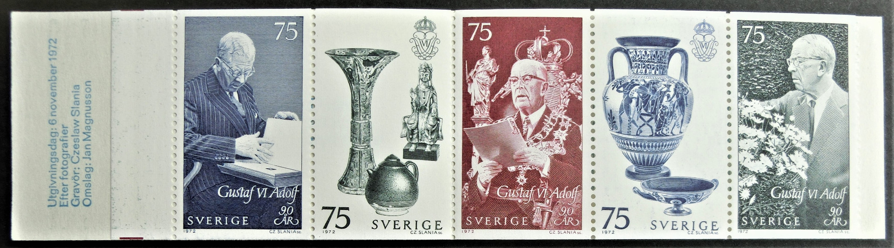
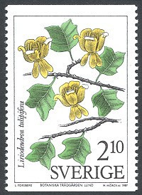

"The King of Hobbies and the Hobby of Kings" har samlandet av frimärken kommit att kallas. I föreningens medlemsförteckning från 1902 finner man som förste hedersledamot en blivande svensk konung, nämligen H.K.H. prins Gustaf Adolf, hertig av Skåne (sedermera Gustaf VI Adolf).



Som hobby är samlandet av frimärken svåröverskådligt, eftersom olika intressen på det mest skiftande sätt kan förenas och ge upphov till mycket personliga samlingar.
Detta fick föreningens medlemmar erfara våren 2000, när en av medlemmarna höll ett föredrag om sin samling kallad "Växtverk". Samlingens stomme visade sig vara de gulnade bladen i ett gammalt herbarium från 1930-talet. Bladen hade skurits ner och monterats på den vänstra halvan av nya vita blad.
På bladens högra halva hade rektangulära bitar av herbariets blad monterats som fond för frimärken med anknytning till de pressade växterna. Här fanns frimärken, som visade växterna, deras växtplatser, användningsområden och personer med anknytning till växterna.

Möten
Lunds Filatelistförenings medlemmar träffas på Träffpunkt Laurentiigatan , Sankt Laurentiigatan 18 (ingång från Bredgatan) i Lund. Mötesdagar är alltid tisdagar med ungefär en månads mellanrum (uppehåll i juni, juli och augusti). Mötena börjar kl. 17.45.
Den första timmen ägnas åt att byta, sälja och köpa frimärken och vykort. Under denna timme är det också möjligt att granska kvällens auktionsobjekt.
Klockan 18.45 förklarar föreningens ordförande dagens möte öppnat. Föreningsangelägenheter dryftas först. Sedan serveras kaffe och kaka (till en ringa kostnad). Efter kaffepausen är det vanligen dags för kvällens föredrag. Mötet brukar avslutas med en auktion.
På vår- och höstavslutningen (föranmälan!) blir det dessutom lotteri och filatelistisk frågesport. I stället för en tidig fika blir det på dessa möten en mindre måltid.
Information
Aktuellt program hittar ni här.
Om ni har några frågor, får ni gärna kontakta föreningens sekreterare.
Nya medlemmar är hjärtligt välkomna!